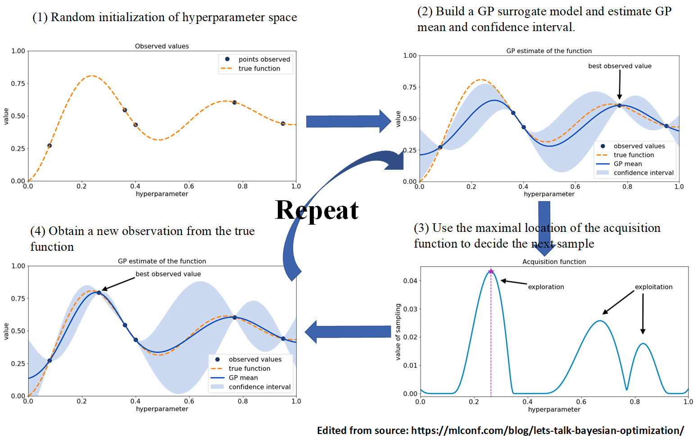

Hyperparameter Tuning¶
Hyperparameter tuning is the problem of choosing a set of optimal hyperparameters for a learning algorithm, which includes reinforcement learning, evolutionary, and neuroevolution algorithms of NEORL. Hyperparameter tuning is effective to maximize the efficiency of the optimization algorithm in hand. In NEORL, we provide different methods to tune hyperparameters, which are highlighted briefly here.
Grid Search¶
See the Grid Search section
Original paper: Bergstra, J., & Bengio, Y. (2012). Random search for hyper-parameter optimization. Journal of machine learning research, 13(2).
Grid Search is an exhaustive search for selecting an optimal set of algorithm hyperparameters. In Grid Search, the analyst sets up a grid of hyperparameter values. A multi-dimensional full grid of all hyperparameters is constructed, which contains all possible combinations of hyperparameters. Afterwards, every combination of hyperparameter values is tested in serial/parallel, where the optimization score (e.g. fitness) is estimated. Grid search can be very expensive for fine grids as well as large number of hyperparameters to tune.

For example, to tune few hyperparameters of DQN, the following grids can be defined:
learning_rate =[0.0001, 0.00025, 0.0005, 0.00075, 0.001]batch_size =[16, 32, 64]target_network_update_freq =[100, 250, 500, 750, 1000, 1250, 1500, 1750, 2000]exploration_fraction =[0.05, 0.1, 0.15, 0.2, 0.25, 0.3, 0.35]The full grid has a size of = 5*3*9*7= 945 (A total of 945 hyperparameter combinations will be evaluated). Therefore, the cost of grid search is:
where \(k_i\) is the number of nodes in the hyperparameter \(i\) and \(d\) is the number of hyperparameters to tune.
Random Search¶
See the Random Search section
Original paper: Bergstra, J., & Bengio, Y. (2012). Random search for hyper-parameter optimization. Journal of machine learning research, 13(2).
Random search is a technique where random combinations of the hyperparameters are used to find the best solution for the algorithm used. Random search tries random combinations of the hyperparameter set, where the cost function is evaluated at these random sets in the parameter space. As indicated by the reference above, the chances of finding the optimal hyperparameters are comparatively higher in random search than grid search. This is because of the random search pattern, as the algorithm might end up being used on the optimized hyperparameters without any aliasing or wasting of resources.

For example, to tune few hyperparameters of DQN, the parameters can be defined depending on the type:
learning_rate = \(\mathcal{U}(0.0001, 0.001)\) (Parameter type is continuous float uniform distribution)batch_size = \(\mathcal{U} \{16, 64\}\) (Parameter type is discrete int uniform distribution)target_network_update_freq = \(\mathcal{C} \{100, 500, 1000, 1500\}\) (Parameter type is categorical grid)exploration_fraction = \(\mathcal{C}\{0.05, 0.1, 0.15\}\) (Parameter type is categorical grid)The cost of random search is determined by the total number of random evaluations provided by the user (ncases).
Bayesian Search¶
See the Bayesian Search section
Original paper: https://arxiv.org/abs/1012.2599
Bayesian search, in contrast to grid and random searches, keeps track of past evaluation results. Bayesian uses past evaluations to form a probabilistic model mapping hyperparameters to a probability of a score on the objective function (e.g. max/min fitness). Bayesian optimization excels when the objective functions are expensive to evaluate, when we do not have access to derivatives, or when the problem at hand is non-convex.
The heart of Bayesian optimization is Bayes theorem, which updates our prior beliefs (e.g. hyperparameter values) after new evidence/data is observed (e.g. new fitness values found by the algorithm of interest). The updated beliefs are represented by the posterior distribution, which is used to guide the next round of hyperparameter sampling. Also, Bayesian optimization combines the concepts of “surrogate” models (e.g. Gaussian processes) to accelerate the search, and the “acquisition” function to guide sampling from the posterior distribution, which both can effectively make a robust search toward the global optima of the cost function (see the Figure below). The sequential-nature of Bayesian optimization makes its parallelization complex and not natural as grid/random/evolutionary search, which is the obvious downside of Bayesian optimization.
{kind=link}
For example, to tune few hyperparameters of DQN by Bayesian search, the parameter space can be defined as:
learning_rate = \(\mathcal{U}(0.0001, 0.001)\) (Parameter type is continuous float uniform distribution)batch_size = \(\mathcal{U} \{16, 64\}\) (Parameter type is discrete int uniform distribution)target_network_update_freq = \(\mathcal{C} \{100, 500, 1000, 1500\}\) (Parameter type is categorical grid)exploration_fraction = \(\mathcal{C}\{0.05, 0.1, 0.15\}\) (Parameter type is categorical grid)The cost of Bayesian search is determined by the total number of fitness evaluations provided by the user (ncases).
Evolutionary Search¶
See the Evolutionary Search section
Original paper: E. Bochinski, T. Senst and T. Sikora, “Hyper-parameter optimization for convolutional neural network committees based on evolutionary algorithms,” 2017 IEEE International Conference on Image Processing (ICIP), Beijing, China, 2017, pp. 3924-3928, doi: 10.1109/ICIP.2017.8297018.
We have used a compact evolution strategy (ES) module for the purpose of tuning the hyperparameters of NEORL algorithms. See the ES algorithm section for more details about the (\(\mu,\lambda\)) algorithm. To reduce the burden on the users, we specified and adapt all ES tuner hyperparameters, so the user needs to specify the hyperparameter space similar to grid, random, and Bayesian search methods. ES tuner leverages a population of individuals, where each individual represents a sample from the hyperparameter space. ES uses recombination, crossover, and mutation operations to improve the individuals from generation to the other. The best of the best individuals in all generations are reported as the top hyperparameter sets for the algorithm (See the Figure below).

Setting up the hyperparameter space for evolutionary search is quite similar to Bayesian search. Lastly, the cost of evolutionary search is determined by the total number of evaluated individuals in the population over all generations (ngen * npop), where npop=10 and ngen is left for the user to decide.